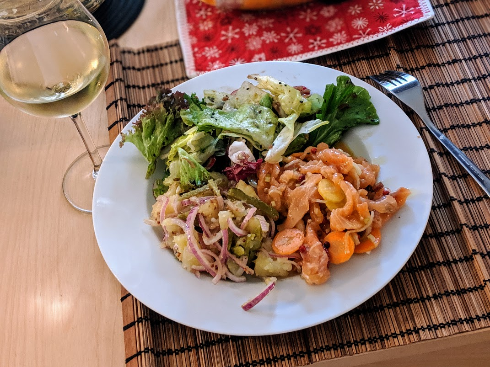

Marinade de saumon

Ici avec une [salade de patates](SaladeDePatates.html)
Pour une douzaine de personnes :
- Un bon litre d'huile d'olive
- 600g de pavés de saumon (frais ou surgelés)
- Quatre carottes
- Un oignon
- Une grosse cuillère à soupe de poivre noir en grains
- Une grosse cuillère à soupe de baies de genièvre
- Deux grosses cuillères à soupe de baies roses
- Deux grosses cuillères à soupe de coriandre en grains
- Du gros sel (beaucoup)
- Recouvrir une feuille de papier aluminium de gros sel, poser les pavés de saumon dessus, recouvrir de gros sel, refermer et mettre au frigo trois bonnes heures.
- Pendant ce temps, couper carottes et oignons en tranches bien fines, et les mettre dans une terrine avec les baies et l'huile d'olive.
- Au bout des trois heures, sortir le saumon du frigo, le rincer à l'eau courante, l'essuyer un peu avec du sopalin, le couper en lamelles plutôt fines, et le mettre dans la terrine en rajoutant de l'huile d'olive si besoin (il faut que le poisson soit recouvert).
- Laisser mariner longtemps. 24h grand minimum, mais 48h, c'est beaucoup mieux, et on peut grimper jusqu'à 96h sans problème, s'il en reste.
- Servir frais, par exemple sur du pain aux céréales légèrement doré.
Remarque : ces quantités peuvent aussi convenir parfaitement à un plat pour 4-5 personnes, par exemple en servant la marinade avec une salade de patates et une salade verte.
Retour à la liste des recettes